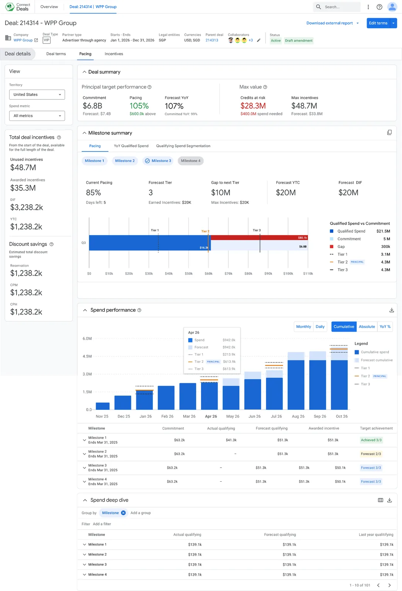
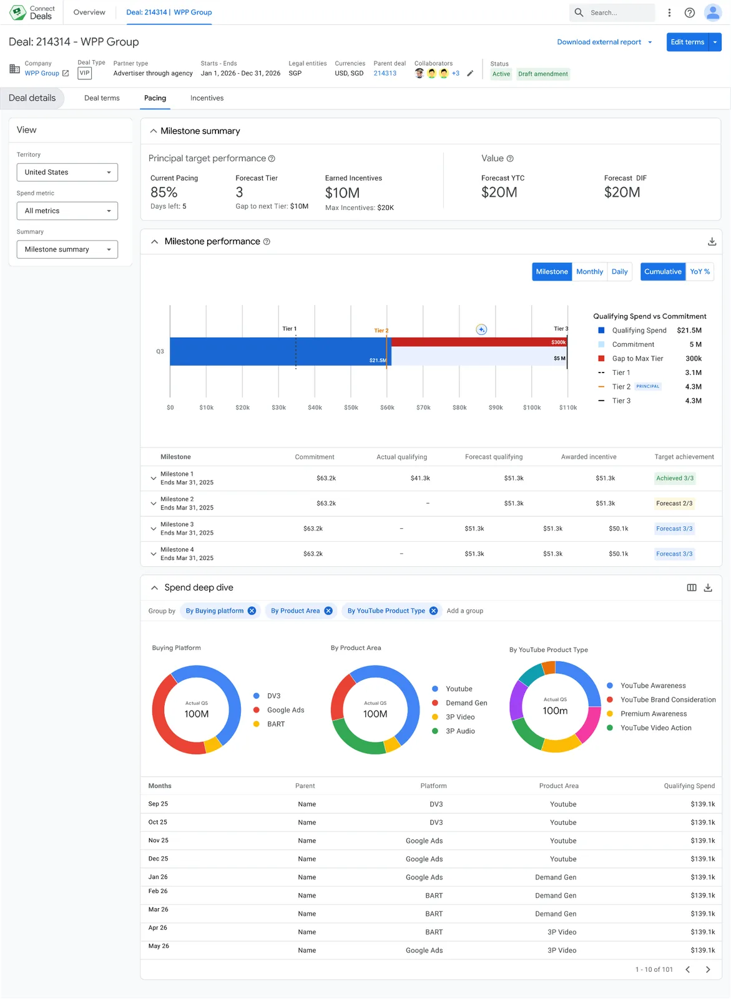

Strategy
Design principles for a wall of data
- Focus on the gap. Emphasize gap-to-next-tier in the current milestone, not just total spend.
- Visuals over tables. Replace text-heavy tables with interactive donut charts for spend segmentation.
- Dual-access experience. A simple view for quick checks; a detailed view for deep troubleshooting.
Three requirements were non-negotiable:
- Metric visibility — draw the eye to the metrics that matter most.
- External safety — a toggle that hides internal data from the client-facing view.
- Dynamic filtering — slice spend by buying platform (DV360, Google Ads, YouTube) in one click.
How we got here
Three directions, one decision
Before committing, I tested how much the dashboard should carry — would a minimalist view drive faster action, or do sellers need the detail to trust the data?

Detailed
Every metric on screen — Forecast Tier, Forecast YTC, Forecast DIF.
Trade-off: complete, but cognitively heavy — the signal gets lost in the noise.

Minimalist
Only what's urgent — current pacing and gap-to-next-tier.
Trade-off: calm and fast, but too thin for sellers to fully trust the numbers.

Hybrid
Defaults to All Metrics, but visual hierarchy surfaces pacing and milestone progress while de-emphasizing the rest.
Why it won: detail on demand, clarity at a glance — sellers trust it and still act fast.
One more test. Reframing "Credits at Risk" from a red alert into a neutral metric measurably reduced anxiety — confirming the second hypothesis.